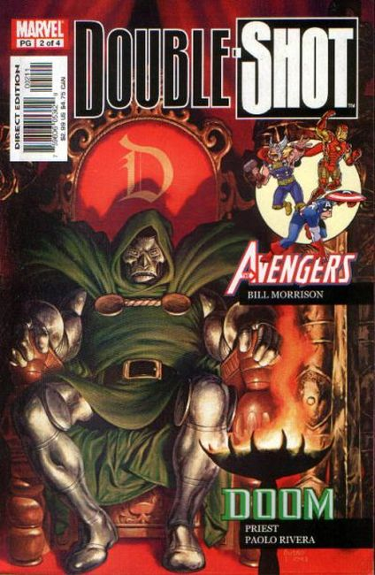
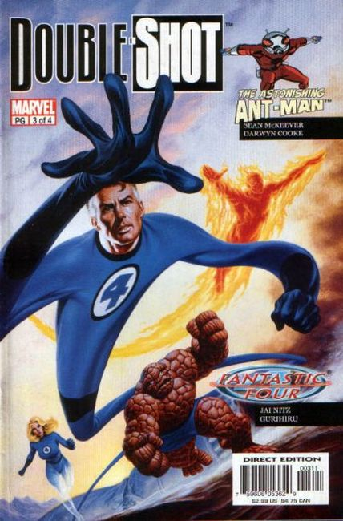
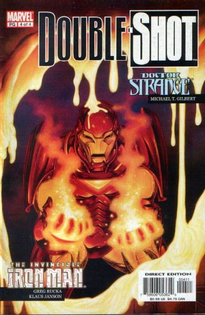

Issue #1: In the tradition of TALES TO ASTONISH, it's two classic characters in one cool comic! First, it's The Hulk by writer/artist Rob Haynes (DAREDEVIL: NINJA), then it's Thor by writer Marlan Harris and internationally-acclaimed artist Kia Asamiya!

Issue #2: Two classic characters in one cool comic, featuring the Avengers by Bongo's Bill Morrison! Plus: Dr. Doom by Priest!

Issue #3: First Mr. Fantastic stretches into the spotlight, then it's Ant-Man drawn by Darwyn Cooke!

Issue #4: It's 2 stories in 1 issue, starring Iron Man (by Greg Rucka, Klaus Janson), Dr. Strange (by Michael Gilbert)!